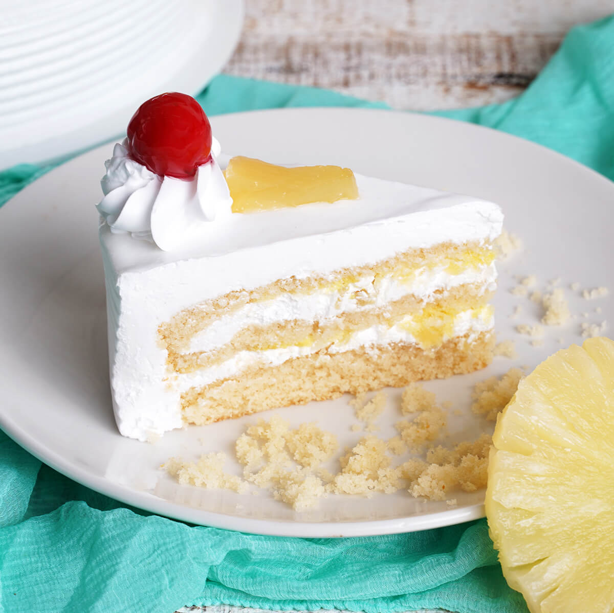

PINEAPPLE PASTRY
Take four eggs and 1 Tbsp of vanilla extract. Beat the eggs and vanilla extract for a minute.Add 1 cup of white granulated sugar to the eggs and continue to beat while adding the sugar. Add 1/4 cup of oil, 1/4 cup of milk, and beat for an additional minute.Sift 1 cup of all-purpose flour and 1 tsp of baking powder into the cake batter. Beat until everything is well incorporated and make sure that are no lumps in the batter.Pour the prepared batter in a 6 x 4-inch pan or an 8 x 2-inch pan. Bake the cake at @375 F for 45 minutes.Let the cake cool down completely before cutting it. When the cakes cool down, cut into two equal parts.Reserve about 3/4 cup of pineapple juice from the canned pineapple. You can also use fresh pineapple for this recipe. Add 2 Tbsp of sugar to the pineapple juice, mix and set it aside.In a chilled bowl, take 2 cups of heavy whipping cream, beat the cream while adding 2 Tbsp of powdered sugar. Continue to whip the cream until stiff peaks form.Place the bottom layer of the cake on a stand and soak the cake with half of the prepared pineapple juice. Place a layer of whipped cream in-between. Place another layer of cake on the top and soak the cake with the remaining pineapple juice. Cover the cake with whipped cream on the top and the sides until the cake is completely frosted.Decorate the cake with pineapple pieces and cherries.Tastes better after refrigerating the cake for about an hour. Best to let the cake soak all the pineapple goodness overnight.